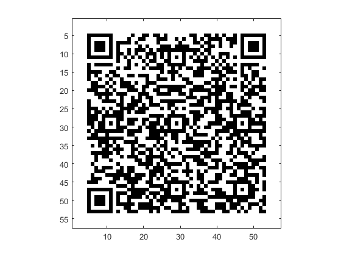
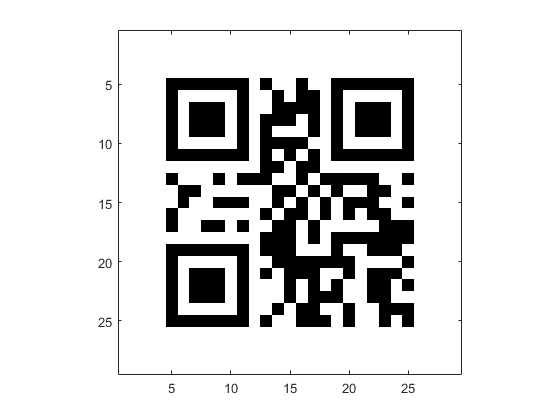
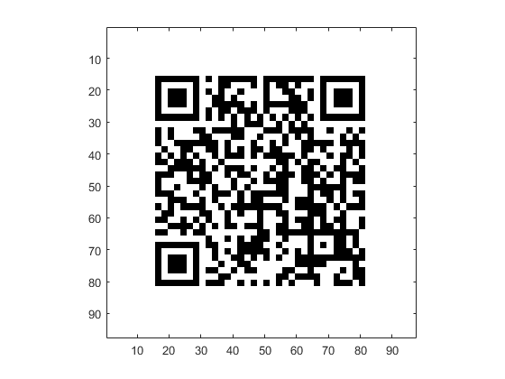
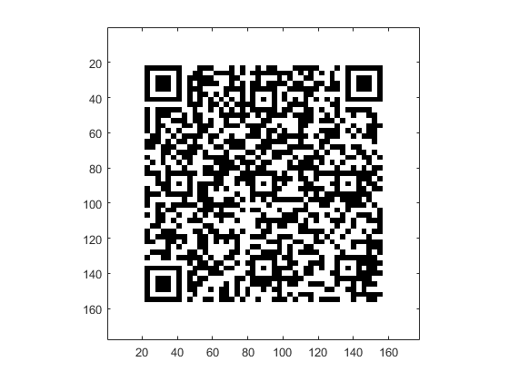
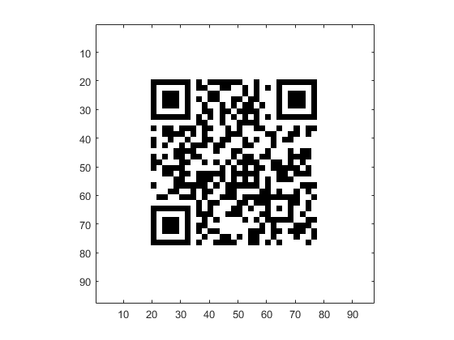
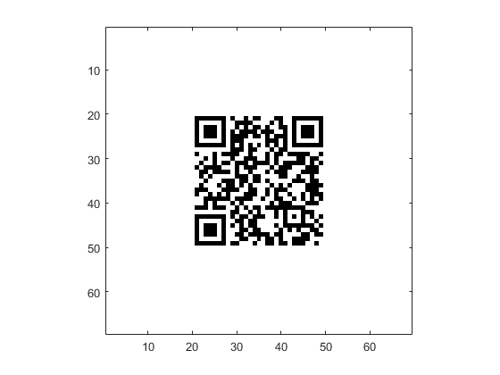

qrcode_gen - 1.1
- Author : Jens Richter
- eMail : jrichter@iph.rwth-aachen.de
- Date : March 28th 2015
Contents
- Short description of QRcode_gen:
- Acknowledgment:
- To make QRcode_gen work:
- Adds all files of qrcode_gen to matlab path and makes a clear close all:
- Example 1 - Generating a simple test QR-Code:
- Example 2 - Generating a simple QR-Code with your message:
- Example 3 - Generating a simple QR-Code with your message and some paramters:
- Example 4 - Generating a MECARD:
- Example 5 - Generating a QR-Code of a desired size:
- Example 6 _ Changing the Quietzone
- Example 7 - Downloading the jars:
Short description of QRcode_gen:
QRcode_gen can generate QR-Codes based on the zxing libraries (http://github.com/zxing). For this purpose it will import all necessary jar files on the fly from a maven repository server (check qrcode_config.m for details). In addition QRcode_gen has an option to download the necessary jar files and save them into a predefined directory. If you are not willing to download precompiled jars from the web (what is understandable in terms of security issues) you can access zxings open source project (http://github.com/zxing) check the source code and compile the jars yourself.
For a list of all parameters that qrcode_gen is accepting please refer to 'help qrcode_gen'.
Acknowledgment:
- QR Code encode and decode by Lior Shapira http://www.mathworks.com/matlabcentral/fileexchange/29239-qr-code-encode-and-decode => Was used a template for QRcode_gen. QRcode_gen differs mainly terms of the matlab implementation. New features in QRcode_gen are the "on the fly" import and the jar download functionality and the use of newer zxing libraries and the functionality test in Matlab 2014b.
To make QRcode_gen work:
Simply add the mianfolder of QRcode_gen your Matlab path. Example.m will do this automatically for you. The path has to be writable and readable if you want to download the jars because folders and the jars have to be created.
Adds all files of qrcode_gen to matlab path and makes a clear close all:
Later on you will have to do that on your own.
clear; close all; fullpath = mfilename('fullpath'); [pathstr1,~,~] = fileparts(fullpath); addpath(genpath(pathstr1));
Example 1 - Generating a simple test QR-Code:
We want to simply test the functionality for this reason we call qrcode_gen without any parameters. A dummy message will be encoded in UTF-8.
qr = qrcode_gen(); % Returns a matrix fExample1 = figure; colormap(gray); imagesc(qr); axis image;
Warning: No message was specified for encoding - a test message will be used instead.
Example 2 - Generating a simple QR-Code with your message:
We want to encode the message "Hello world".
message = 'Hello World'; qr = qrcode_gen(message); % Returns a matrix fExample2 = figure; colormap(gray); imagesc(qr); axis image;
Example 3 - Generating a simple QR-Code with your message and some paramters:
We want to encode a message and define Character Set and QR-Code Version. For a full list of all available Character Sets visit http://github.com/zxing/zxing/blob/master/core/src/main/java/com/google/zxing/common/CharacterSetECI.java or have a look into qrcode_config.m .
message = 'Hello World in UTF-8 (default) and QR-Code-Version 20'; qr = qrcode_gen(message,'CharacterSet','UTF-8','Version',20); % Returns a matrix fExample3 = figure; colormap(gray); imagesc(qr); axis image;
Example 4 - Generating a MECARD:
We want to generate a MECARD. Have a look on http://github.com/zxing/zxing/wiki/Barcode-Contents for a list of available keywords.
message = 'MECARD:N:Skywalker,Luke;ADR:76 9th Avenue, 4th Floor, New York, NY 10011;TEL:1234567891011;EMAIL:luke@skywalker.com;;'; qr = qrcode_gen(message,'Version',40); % Returns a matrix fExample4 = figure; colormap(gray); imagesc(qr); axis image;
Example 5 - Generating a QR-Code of a desired size:
We want to generate a QR Code of a certain size. We have to fulfill the 17+4N rule. This basically means that the dimension of your QR-Code in x and y fulfill this rule. For example 97 fulfills the rule because 17+4*20 = 97. Annotation: The Version parameter basically also sets the size of the QR-Code and has priority over the Size parameter.
message = 'I fullfill the 17+4N rule.'; qr = qrcode_gen(message,'Size',97); % you can also specify [97,97] instead fExample5 = figure; colormap(gray); imagesc(qr); axis image;
Example 6 _ Changing the Quietzone
For QR code reader it is easier to read QR-codes with a bigger quiet zone. In this example we want to set the quiet zone size to 20 pixels.
message = 'Hello World again with a big quiet zone'; qr = qrcode_gen(message,'QuietZone',20); % Returns a matrix fExample6 = figure; colormap(gray); imagesc(qr); axis image;
Example 7 - Downloading the jars:
We want to download the jars to our system instead of loading them on the fly. Actually we do not want to this here because this decision is up to you.
If you are willing to do that use the syntax:
qrcode_gen('DownloadJars',1);